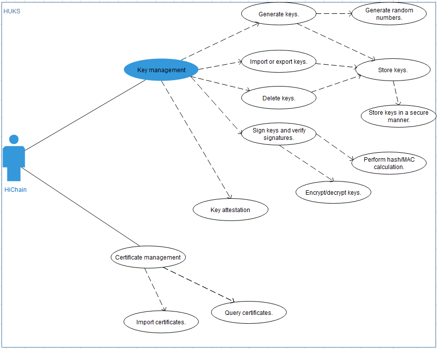

Data Security¶
Mechanism¶
Huawei Universal Keystore Service (HUKS) provides certificate management, key management, secure storage, and key authentication services. For OpenHarmony, it mainly provides key management and secure storage, as well as the basic device certification feature for HiChain (device certification platform). The following figure shows the functions of HUKS
Figure 1 HUKS functions

The following algorithms are supported:
Authentication and encryption: AES-128/192/256-GCM
Signature verification: ED25519
Key negotiation: X25519
Message authentication: HMAC-SHA256/512
Data digest: SHA256/512
HUKS has the following restrictions:
Secure storage of keys: Keys must be stored in a secure area and cannot be modified. When factory settings are restored, preset keys are not deleted.
Key access security: OpenHarmony stores different data of an application separately to implement data isolation in the application, and includes the UID and process ID in the parameter structure to implement data isolation between different applications.
Concurrent access is not supported, that is, multiple applications cannot invoke HUKS simultaneously. As HUKS is a single library, resource exclusion is not a concern. If multiple applications want to use HUKS, they need to connect to the HUKS library and pass their respective paths for permanently storing data. In this way, data of these applications is isolated from each other.
Recommended Practices¶
To use the device certification function, it is recommended that you use HiChain to interconnect with HUKS. HUKS provides applications such as HiChain with key generation, import, export, encryption/decryption, storage, and destruction, certificate import and query, and secret information storage.